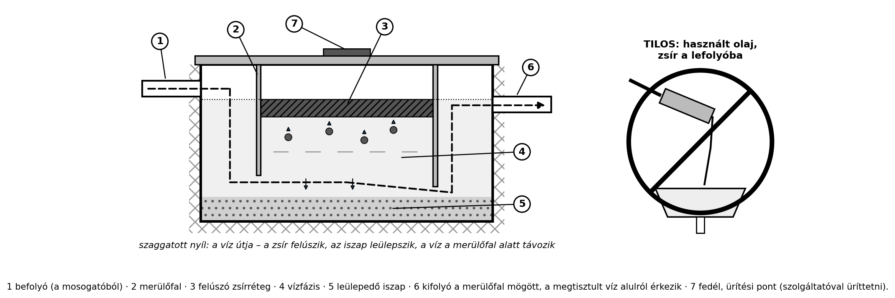

A cukrászüzemben naponta keletkezik szennyvíz, hulladék, hő és zaj. Ha ezeket nem kézben tartva kezeljük, az nemcsak a környezetet terheli, hanem a munka biztonságát és a vállalkozás költségeit is rontja. Egy eldugult zsírfogó megállíthatja a mosogatást, egy rosszul tárolt használt sütőolajos kanna tűzveszélyt okozhat, a folyamatosan csöpögő csap pedig észrevétlenül több száz liter vizet pazarol el havonta. A környezetvédelmi ismeretek ezért nem a „zöld szlogenekről” szólnak, hanem a rendezett, biztonságos és költséghatékony üzemvitelről.
Képzelj el egy cukrászüzemet zárás előtt. A sütő már lehűlt, a hűtőajtó csukva, a mosogató alatti zsírfogó kiürítve, a használt sütőolaj egy lezárt, felcímkézett fémkannában várakozik a kijelölt gyűjtőhelyen. A papírdobozok a kék szelektív gyűjtőben, az üres tejszínes dobozok elöblítve a műanyaggyűjtőben. A mosogatógép nem folyóvízzel üzemel, hanem gyűjtőmedencés rendszerrel. Ez a kép a rendezett környezetvédelmi gyakorlat.
Definíció. Környezeti terhelés: minden olyan anyag- vagy energia-kibocsátás, hulladékképződés, zaj- és hőtermelés, amely az élő környezetet vagy a lakosság egészségét kedvezőtlenül érintheti.
Definíció. Veszélyes hulladék: az a hulladék, amely a hulladéktörvény melléklete szerint legalább egy veszélyességi jellemzővel rendelkezik (például mérgező, irritáló, fertőző vagy tűzveszélyes). A besorolást mindig a hatályos hulladékjegyzék szerint kell ellenőrizni (ellenőrizendő: aktuális hulladékjegyzék és veszélyességi jellemzők).
Definíció. Szelektív gyűjtés: a hulladék anyagfajtánként történő elkülönített gyűjtése, hogy újrahasznosítható vagy kezelhető legyen.
Definíció. Zsírfogó: a szennyvízelvezető rendszerbe épített, ülepítésen alapuló berendezés, amely a zsírt és egyéb úszó szennyezőket a csatorna elérése előtt visszatartja.
Jogszabály. A környezet védelmének általános szabályairól szóló törvény (1995. évi LIII. törvény) kimondja, hogy minden gazdálkodó tevékenységet a környezet terhelésének elkerülésével vagy csökkentésével kell végezni. A hulladékról szóló törvény (2012. évi CLXXXV. törvény) rögzíti a hulladékkezelési kötelezettségeket, a veszélyes hulladékok elkülönített gyűjtését és a hulladékbirtokos felelősségét (ellenőrizendő: aktuális végrehajtási rendeletek és helyi hulladékgazdálkodási rendelet). A vizek védelmére a vízgazdálkodásról szóló törvény (1995. évi LVII. törvény) és a kapcsolódó szennyvízkibocsátási előírások irányadók (ellenőrizendő: helyi csatornázási és szennyvízrendelet). A zajvédelemre vonatkozóan a környezeti zaj és rezgés elleni védelem szabályairól szóló kormányrendelet és a munkavédelmi zajterhelési határértékek az irányadók (ellenőrizendő: aktuális rendeletszámok).
A cukrászüzemben keletkező szennyvíz jellemzően zsíros, cukros, fehérjés és enyhén lúgos. A legnagyobb gondot a zsír okozza, mert kihűlve megtapad a cső falán, és dugulást, szagproblémát okoz. A zsírfogó feladata, hogy fizikailag visszatartsa ezeket a zsír- és szennyezőrétegeket, mielőtt a szennyvíz a közcsatornába jutna.
A gravitációs zsírfogóban a befolyó víz lelassul: a könnyebb zsír a felszínre úszik és ott réteget képez, a nehezebb szennyeződés iszapként leülepszik, a megtisztult víz pedig a merülőfal alatt, alulról jut a kifolyóhoz. Ezért kell a zsírréteget és az iszapot rendszeresen üríttetni, és ezért tilos a használt olajat a lefolyóba önteni: a zsírfogót gyorsan megtölti, a csőben megdermed.

A zsírfogó rendszeres ellenőrzése és ürítése nemcsak jogszabályi, hanem működési kérdés is. Ha a zsírfogó megtelik, a mosogató lassabban folyik le, a zsír visszadugulhat, és a termelés leállhat. A zsírfogó tisztítását, ürítését az üzem saját munkatársai is elvégezhetik, ha kisebb egységről van szó, de a keletkező zsíros hulladékot nem szabad a csatornába mosni, hanem a szolgáltatóval el kell szállíttatni (ellenőrizendő: helyi szabályozás a zsírfogó ürítés gyakoriságáról).
Tilos. Zsírt, olajat, tejszínt, tésztaalapanyag-maradékot vagy vegyszeres mosogatóvizet a lefolyóba önteni, ha az a közcsatornába juthat. A megmaradt tejszínből, krémből származó zsíros maradékot a szerves hulladékgyűjtőbe vagy a kijelölt zsírgyűjtő edénybe kell helyezni.
A cukrászatban többféle hulladék keletkezik. Az alábbi táblázat a fő csoportokat mutatja.
| Hulladékcsoport | Példa a cukrászatban | Kezelés |
|---|---|---|
| Kommunális hulladék | egyéb, nem veszélyes, nem újrahasznosítható hulladék | helyi közszolgáltató gyűjtése |
| Szelektív papír | kartondoboz, papírcsomagolás | szelektív gyűjtő |
| Szelektív műanyag/fém | műanyag flakon, fólia, alufólia, fémdoboz | szelektív gyűjtő |
| Üveghulladék | üvegpalack, csomagolóüveg | szelektív gyűjtő |
| Biológiailag lebomló hulladék | csak tisztán növényi hulladék: gyümölcs- és zöldséghéj, kávézacc | komposztálás vagy helyi biohulladék-gyűjtés a helyi szabályok szerint |
| Élelmiszer-hulladék, konyhai hulladék | selejtezett krém, sütemény, tojáshéj, tejtermék-maradék | fedett, jelölt gyűjtőedényben, szerződött, engedélyes gyűjtőnek átadva, bizonylattal (ellenőrizendő: állati melléktermék-szabályozás, 1069/2009/EK és hazai végrehajtása) |
| Használt sütőolaj | fánksütésből, olajban sütött termékekből származó fáradt olaj | engedéllyel rendelkező hulladékkezelőnek átadás |
| Veszélyes hulladék | vegyszeres göngyöleg, fáradt ásványolaj, elem, fénycső, egyes hűtőközegek, festék- és oldószermaradék | veszélyes hulladék gyűjtőhely, engedélyezett átvevő |
A használt sütőolaj nem a csatornába, nem a kommunális hulladékba és nem a szelektív műanyaggyűjtőbe való. Külön, zárható, hőálló edényben kell gyűjteni, hűvös, tűztől védett helyen.
Eljárás. A használt sütőolaj gyűjtési eljárása
(ellenőrzőlista).
1. A fritőzből (olajsütőből) leeresztett olajat hagyd hűlni biztonságos,
körülbelül 40–50 °C alá (ellenőrizendő: a gyűjtőedény hőállósága
szerint).
2. A nagyobb szennyeződéseket szűrd ki, de a szűrt maradékot is az
olajos hulladékhoz tedd, ne a csatornába.
3. Az olajat töltsd a kijelölt, felcímkézett, zárható fém- vagy
műanyaggyűjtő edénybe.
4. Az edényt szorosan zárd le, és tüntesd fel rajta: „használt
sütőolaj”, valamint a keletkezés dátumát.
5. Tárold a gyűjtőhelyen, hőforrástól, nyílt lángtól és közlekedőúttól
távol.
6. A szolgáltatónak történő átadáskor kérj bizonylatot; a bizonylatot
őrizd meg az ügyvitelben.
Figyelem. A frissen használt olaj súlyos égési sérülést okozhat, a kiömlött olaj pedig csúszásveszélyes. Az olaj gyűjtését csak zárt, hőálló edénybe végezd, kesztyűben, hosszú ujjú munkaruhában.
Tilos. A használt sütőolajat a csatornába, a felszíni vízbe, a talajra vagy a kommunális hulladékba önteni. Tilos a hűtőberendezést, klímát vagy fénycsövet a kommunális hulladékba dobni, mert hűtőközeget vagy higanyt tartalmazhat.
A cukrászüzemben a zaj fő forrásai a hűtőgépek, a szellőző- és klímarendszer, a konyhai gépek, a mosogatógép és a kompresszorok. A zaj két szempontból lényeges: a dolgozók hallásvédelme és a környező lakóterület nyugalma.
A munkavédelmi zajterhelés csökkentésének módjai: a gépek rendszeres karbantartása, a rezgő alkatrészek rögzítése, gumibakok alkalmazása, zajszigetelő burkolat, és szükség esetén hallásvédő eszköz. Az éjszakai üzemben különösen fontos a szellőzés és a hűtőaggregátorok alacsony zajszintje, mert a lakóövezeti határértékek éjszaka szigorúbbak (ellenőrizendő: helyi zajvédelmi határértékek).
A kültéri hűtőaggregátort lehetőleg ne lakószoba ablaka alá helyezzék, és hangtompító burkolattal vagy telekhatáron belüli megfelelő tájolással csökkentsék a zavaró zajt. A zajpanasz a leggyakoribb környezetvédelmi vita a vendéglátásban.
Az energia és a víz a cukrászatban a legnagyobb üzemeltetési költségek közé tartozik. Az energiatakarékos üzemvitel egyszerű napi gyakorlatokon múlik.
Példa. Egy csöpögő csap másodpercenként egy csepp vizet veszít, egy csepp térfogata megközelítőleg 0,05 ml. A napi veszteség így (tanulási példa). Havonta hozzávetőleg 130 liter, ami éves szinten több mint 1,5 m³. Ez a mennyiség egy rosszul záródó csap esetén még nagyobb is lehet.
Az élelmiszer-pazarlás csökkentése a tervezéssel kezdődik. A pontos anyaghányad-számítás, a készletgazdálkodás, a FIFO-elv (először be, először ki) és a napi értékesítési tapasztalatok alapján történő gyártás mind csökkenti a selejtet. A fel nem használt, de még biztonságos nyersanyagokat más termékbe lehet átdolgozni, ha az élelmiszerbiztonsági szabályok engedik. A gyártás közben keletkező, a termelőtérből ki nem került, hűtve tartott, még a fogyaszthatósági időn belüli melléktermék (pl. levágott tortaszél, piskótaszél) a HACCP-tervben rögzített feltételekkel, az eredeti allergénsor átvezetésével felhasználható pohárdesszertben vagy „maradékmentő” krémben; a hűtési lánc megszakítása és a keresztallergén-szennyezés tilos. A vevőtérbe kihelyezett, kóstolásra kitett, visszahozott termék és az ételminta nem dolgozható át.
1. példa (A). Egy cukrászüzemben hetente 80 kg
kommunális hulladék keletkezik. A hulladékvizsgálat szerint 35%-a
szelektíven gyűjthető lenne. Mennyi lesz a heti kommunális hulladék a
szelektív gyűjtés bevezetése után?
Keresett:
(kg).
Képlet:
.
Behelyettesítés:
.
Eredmény: a heti kommunális hulladék 52 kg-ra csökken.
Ellenőrzés: a szelektív mennyiség
,
ami
.
∎
2. példa (B). Egy rosszul záródó mosogatócsap
percenként 0,4 l vizet folyat el, ha valaki elfelejti teljesen elzárni.
A műszak alatt 90 percig folyik. Mennyi vizet pazarol el, és mennyibe
kerül ez, ha 1 m³ víz díja 500 Ft (tanulási példa, ellenőrizendő:
aktuális vízdíj)?
Keresett:
(l), és a költség (Ft).
Képlet:
.
Behelyettesítés:
.
Költség:
.
Eredmény: 36 liter víz és 18 Ft veszteség egyetlen esetben.
Ellenőrzés: évente, ha hetente 5 ilyen eset van:
,
ami már 4 680 Ft, de a pontos megtakarítás a javítás költségétől is
függ. ∎
Eljárás. Környezetvédelmi napi zárási rutin.
Cél: a környezeti terhelés és a hulladékképződés csökkentése a műszak
végén.
Eszközök: hulladékgyűjtő edények, használtolaj-kanna, zsírfogó ürítő
eszköz, fedeles vödör, takarítóeszközök.
A környezetvédelmi gyakorlat ellenőrzési pontjai: a hulladékgyűjtők megfelelően fel vannak címkézve, a szelektív hulladék nem keveredik kommunálissal, a használt olaj lezárt kannában van, a zsírfogó nem telített, a csapok nem csöpögnek, a gépek leállított állapotban vannak, a veszélyes hulladékot elkülönítve tárolják, és az átadási bizonylatok megvannak. Az ellenőrzés lehet napi, heti és havi gyakoriságú.
Hiba 1. Zsír a lefolyóba öntése.
Tünet: a mosogató lassan folyik le, kellemetlen szag,
csatornadugulás.
Ok: a zsír kihűl és megtapad a cső falán.
Megelőzés: a zsírfogó rendszeres ürítése, a maradék zsírt hulladékként
gyűjtik. Javítás: dugulás esetén szakember; maró hatású, lúgos
lefolyótisztító helyett mechanikai tisztítás.
Hiba 2. Veszélyes hulladék a kommunális gyűjtőbe
kerül.
Tünet: a hulladékgyűjtőben elem, fénycső, vegyszeres flakon
található.
Ok: a dolgozó nem ismeri a veszélyes hulladék fogalmát, vagy nincs
kijelölt gyűjtőhely.
Megelőzés: jól látható, felcímkézett veszélyeshulladék-gyűjtő, oktatás.
Javítás: a hibásan kihelyezett veszélyes hulladékot elkülöníteni, a
gyűjtőt üríteni, az esetet jelenteni.
Hiba 3. Folyóvizes mosogatás.
Tünet: a vízóra nagy fogyasztást mutat, a mosogató folyamatosan
üzemel.
Ok: a dolgozó úgy gondolja, hogy a folyó víz higiénikusabb.
Megelőzés: gyűjtőmedencés mosogatás, a folyóvíz csak az öblítéshez.
Javítás: a dolgozók betanítása, a gyűjtőmedence kihelyezése.
Tanulóeset. Egy kisebb cukrászüzemben a délelőtti műszakban a mosogató hirtelen lassan kezd lefolyni. A konyhafőnök kinyitja a zsírfogót, és azt látja, hogy a zsírréteg a lefolyó nyílásáig ér. A dolgozók korábban a maradék vajas krémeket a mosogatóba öntötték, mert „úgyis elmossa a víz”. A zsírfogó kiürítése és a cső tisztítása egy órára leállítja a termelést, a szennyvíz pedig majdnem a közcsatornába jutott. A tanulság: a zsír nem oldódik fel magától, és a legjobb megoldás a keletkezés helyén történő gyűjtés. Az üzem ezt követően a zsírfogó ürítését napi zárási rutinba iktatta, és a zsíros maradékot fedeles gyűjtőbe gyűjti.
A válaszok a „Megoldások” elején találhatók.
1. feladat (A). Nevezd meg a cukrászüzem négy káros környezeti terhelését, és mindegyikhez írj egy-egy csökkentési módot.
2. feladat (A). Melyik gyűjtőbe tartozik a kartondoboz, az alufólia, a tojáshéj, a használt sütőolaj és a vegyszeres flakon?
3. feladat (B). Egy cukrászüzemben a havi hulladék 120 kg. A kommunális hulladék 40%-a szelektíven gyűjthető. Mennyi kommunális hulladék marad, és mennyi a szelektíven gyűjtött anyag? Válaszolj kg-ban, és tüntesd fel az ellenőrzést.
4. feladat (B). Egy üzemi hűtő ajtaját naponta 20 alkalommal 1,5 percig tartják nyitva. A hűtő kompresszora nyitott ajtónál 0,8 kWh-val több energiát fogyaszt óránként, mint csukott állapotban. Mennyi a havi (30 nap) többletenergia-fogyasztás? (Tanulási példa; a pontos fogyasztás a gép adataitól függ.)
5. feladat (C). Hibaelemzés. Egy üzletvezető azt tapasztalja, hogy a szennyvíz-elszámolásban a vízfogyasztás egy hónap alatt 25%-kal nőtt, de a termelés nem változott. Milyen környezetvédelmi és üzemeltetési okokat gyanakodhat? Milyen vizsgálatokat végeznél el először?
6. feladat (D). Gyakorlati feladat. Otthon vagy gyakorlóhelyen készíts saját környezetvédelmi zárási ellenőrzőlistát egy kis cukrászati munkaterületre. A lista legalább 8 pontból álljon, és tartalmazza a hulladékkezelést, a víz- és energiazárást, valamint a veszélyes anyagok ellenőrzését. Egy héten keresztül naponta hajtsd végre, és utána értékeld: melyik pont okozta a legtöbb hibát?
Önellenőrzés – válaszok
1. feladat (A) megoldása. Négy környezeti terhelés: (1) zsíros szennyvíz – zsírfogó és zsírgyűjtés; (2) hulladék – szelektív gyűjtés; (3) zaj – karbantartás, rezgéscsillapítás, megfelelő elhelyezés; (4) energia- és vízpazarlás – leállítás, karbantartás, víztakarékos mosogatás.
2. feladat (A) megoldása. Kartondoboz: papírgyűjtő; alufólia: fémgyűjtő; tojáshéj: biohulladék; használt sütőolaj: külön sütőolaj-kanna; vegyszeres flakon: veszélyes hulladék gyűjtőhely (ha maradékot tartalmaz).
3. feladat (B) megoldása.
Adott:
,
.
Keresett:
,
.
Képlet:
.
.
Ellenőrzés:
;
.
∎
4. feladat (B) megoldása.
Adott: napi 20 alkalom, egyenként
(mert
).
Napi nyitvatartási idő:
.
Havi nyitvatartási idő:
.
Többletenergia:
.
(Tanulási példa; a kompresszor adataitól függ.) ∎
5. feladat (C) megoldása. A vízfogyasztás növekedésének lehetséges okai: csöpögő vagy rosszul záródó csap, folyóvizes mosogatás, a mosogatógép hibája, a WC-öblítő folyamatosan folyik, illetve csőtörés vagy rejtett szivárgás. Első vizsgálat: a vízóra mozgásának ellenőrzése, amikor minden csap zárva; a mosogató, WC, mosogatógép csatlakozásainak átnézése; a zsírfogó és a lefolyó lassú folyása. A környezetvédelmi szempontból fontos a zsíros szennyvíz növekedésének kivizsgálása is.
6. feladat (D) megoldása. A lista legalább 8 pontból álljon: pl. (1) a sütő leállítva és lehűtve; (2) a hűtőajtó zárva; (3) a csapok nem csöpögnek; (4) a szelektív gyűjtők ürítve; (5) a használt olaj lezárt kannában; (6) a zsírfogó ellenőrizve; (7) a veszélyes hulladék a kijelölt helyen; (8) a világítás lekapcsolva; (9) a takarítás hulladékai megfelelő gyűjtőben; (10) a bizonylatok elrendezve. Az értékelésnél az a pont, ahol a hét során a legtöbb hiba előfordult, jelzi a fejlesztendő területet.
A cukrászüzem környezeti terhelései közé tartozik a zsíros szennyvíz, a hulladék, a zaj, az energia- és vízfogyasztás, valamint az élelmiszer-pazarlás. A zsírfogó rendszeres ürítése megakadályozza a csatorna eldugulását, tilos a zsírt és az olajat a lefolyóba önteni. A használt sütőolajat külön, lezárt, felcímkézett edényben gyűjtik, és csak engedéllyel rendelkező hulladékkezelőnek adják át; a bizonylatot megőrzik. A veszélyes hulladékot – így a vegyszeres göngyöleget, az elemet és a fénycsövet – elkülönítve kezelik. A szelektív gyűjtés anyagfajtánként történik. Az energiatakarékosság a sütők és hűtők észszerű üzemeltetésén, a víztakarékosság pedig a gyűjtőmedencés mosogatáson és a csapok karbantartásán múlik. Az élelmiszer-pazarlást tervezéssel, FIFO-elvvel és maradékfeldolgozással lehet csökkenteni. A zajvédelem a gépek karbantartását és a lakóövezeti határértékek betartását jelenti. Továbbvitt eredmény. Ezek a fogalmak és eljárások a vizsgafelkészülés során a gyakorlati munkavégzés, a munkahelyi környezetvédelmi feladatok és a hatósági ellenőrzések témakörében ismét előkerülnek: a tanuló a gyakorlati munka közben alkalmazni tudja a hulladékkezelési és víz-/energiatakarékossági eljárásokat.
A jogszabályi hátteret a 1995. évi LIII. törvény, az 1995. évi LVII. törvény, a 2012. évi CLXXXV. törvény, valamint a hulladék keretirányelv (2008/98/EK) és annak módosítása képezi. A környezeti zajvédelemre a környezeti zaj és rezgés elleni védelem egyes szabályairól szóló kormányrendelet és a zajterhelési határértékekről szóló miniszteri rendelet, a munkahelyi zajra a munkavédelmi törvény (1993. évi XCIII. törvény) végrehajtási rendelete vonatkozik (ellenőrizendő: rendeletszámok). A hűtőközegekre az F-gázokról szóló (EU) 2024/573 rendelet és a hazai végrehajtási szabályok vonatkoznak (ellenőrizendő). A használt sütőolaj kezelésével kapcsolatos részletszabályokat a helyi hulladékgazdálkodási rendelet és a hulladékkezelői szerződés tartalmazza (ellenőrizendő). A vízdíj, a zajterhelési határérték és a sütőolaj hűtési hőmérséklete a kiadás előtt helyi, illetve gyártói adatokkal ellenőrizendő. A hűtőberendezések hűtőközegére vonatkozó szabályok az F-gáz rendelet (517/2014/EU) alapján szükségesek, de a jelen alfejezetben tájékoztató jelleggel szerepelnek (ellenőrizendő).